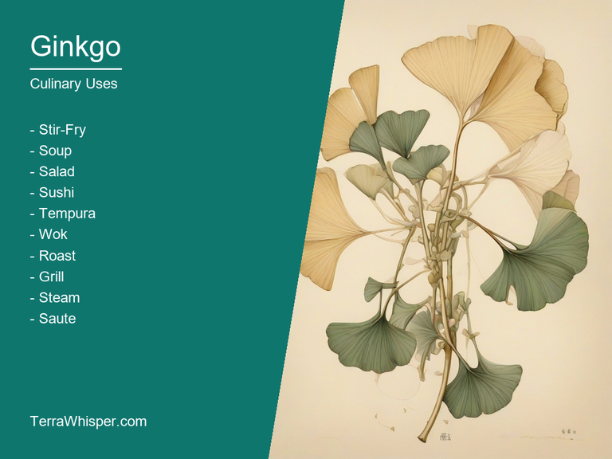
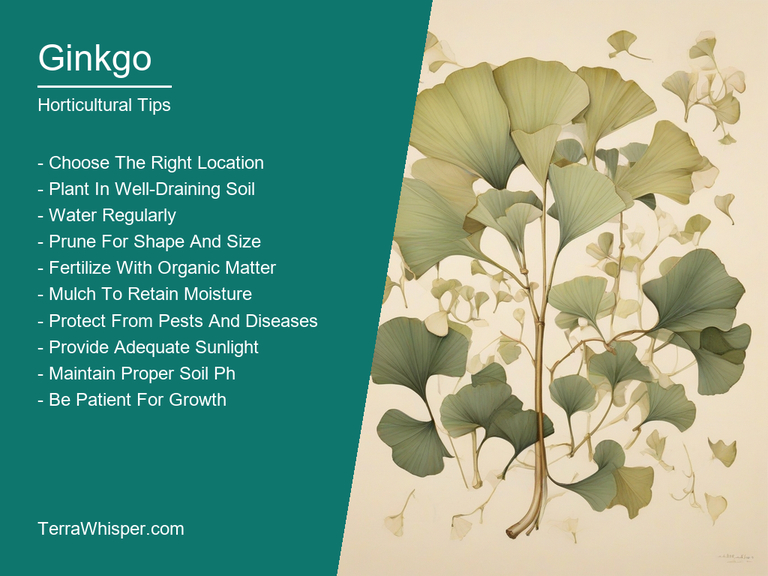
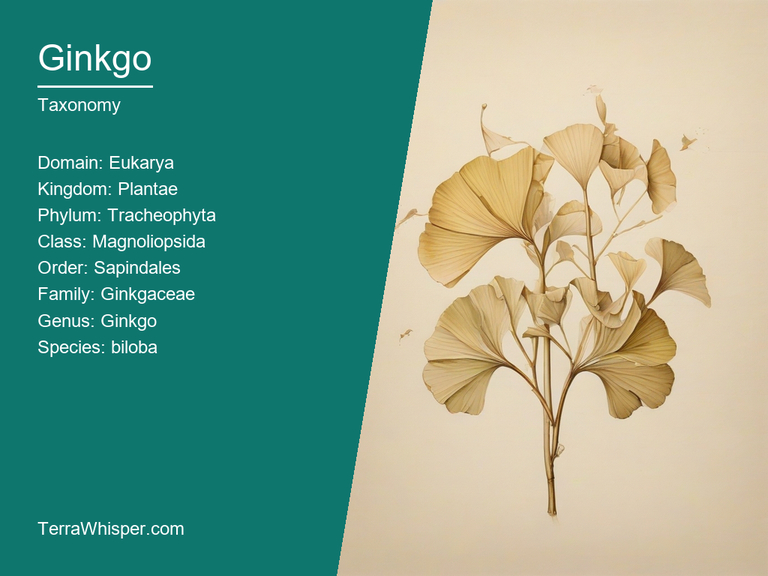
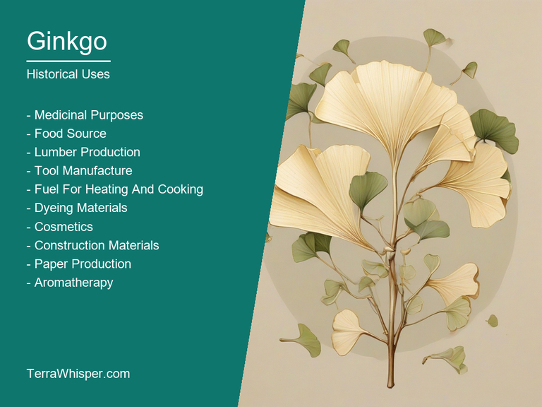

What To Know Before Using Ginkgo (Ginkgo Biloba)

Ginkgo, scientifically know as Ginkgo biloba, is a remarkable tree species with a rich history and various uses in medicine and horticulture. It has been cultivated for thousands of years across East Asia for its many benefits, making it one of the oldest living tree species on Earth.
Medicinally, Ginkgo biloba extracts have been used to treat a wide range of conditions such as memory loss and cognitive impairment, anxiety, depression, tinnitus, and circulatory problems like intermittent claudication. Some of the most important components in this plant's medicinal properties include flavonoids and terpenoids, which contribute to its antioxidant effects and help protect cells from damage caused by free radicals. As for culinary uses, Ginkgo leaves are edible and have been used as a vegetable in traditional Chinese cuisine. They have a mild flavor and are usually steamed or stir-fried in order to enhance their taste.
Apart from its medicinal and culinary properties, Ginkgo biloba also exhibits value in horticulture and landscaping due to its impressive ornamental features. The leaves have a unique fan shape and a distinctive yellow color when they turn in the autumn season. Additionally, it displays intricate branching patterns as the trees grow and develop. In urban areas, Ginkgo trees are often planted for their ability to adapt to polluted environments with tolerable amounts of air pollution.
The botanical characteristics and history of this ancient tree species are equally fascinating. Fossil records indicate that it was once widespread across the world during the Mesozoic Era, around 200 million years ago. However, Ginkgo biloba is now only found in a few isolated populations in China, Japan, Korea, and a single population in the United States. Its seeds have been used as a traditional Chinese medicinal substance known as 'bai guo ye' or 'silver apricot kernel', while its wood has been utilized for crafting tools and furniture throughout history.
In this article, you will discover what are the medicinal and culinary uses of ginkgo. Then, you'll learn how to cultivate it, what is its botanical profile, and how it was used historically.
What Are The Medicinal Uses Of Ginkgo?
Ginkgo (Ginkgo biloba) has many health benefits, such as improving cognitive functions and providing neuroprotection. It helps with conditions including mental diseases like dementia, Alzheimer's disease, and Parkinson's disease. Additionally, it is used for enhancing memory, treating anxiety, and boosting mood due to the presence of bioactive compounds that have antioxidant and anti-inflammatory properties.
The following illustration lists the most important uses of ginkgo in medicine.
Medicinal constituents present in Ginkgo (Ginkgo biloba) include flavonoids, terpenes, and ginkgolides which act as potent antioxidants, thus contributing to the many therapeutic effects of this plant. Flavonoids are known for their anti-inflammatory properties that aid in reducing inflammation related to various health issues. Terpenes exhibit numerous potential actions like reducing oxidative stress and providing neuroprotection. Ginkgolides, on the other hand, have unique activities such as inhibiting platelet aggregation, which is helpful for blood circulation and preventing thrombosis.
The most used parts of the Ginkgo tree in traditional medicine are its leaves. They are frequently found ground into powder form or processed into herbal capsules and tablets. These supplements offer a convenient way to consume medicinal components found within the plant. Another common method is to prepare decoctions or infusions by brewing fresh or dried Ginkgo leaves in water to draw out their active compounds. The flavors of these preparations are generally bitter, which can be masked with other ingredients or sweeteners during cooking if desired.
Some potential side effects associated with using Ginkgo (Ginkgo biloba) may include stomach upset, headache, dizziness, and allergic reactions in certain individuals. People with bleeding disorders or those taking blood-thinning medications should exercise caution as Ginkgo may increase the risk of bleeding due to its antiplatelet effects. It is also important to avoid combining this plant's supplements with other herbal remedies or prescription drugs without consulting a healthcare professional, particularly in instances where interactions might occur.
To ensure safe usage, adhere to recommended dosage levels suggested on the product label or by your healthcare provider. It is crucial to be aware of any allergies or sensitivities before consuming Ginkgo (Ginkgo biloba) and avoid taking it during pregnancy or breastfeeding unless advised otherwise by a medical expert. Monitor yourself closely after starting a supplement, being attentive for potential signs of adverse effects to immediately report them to your healthcare provider if needed.
What Are The Culinary Uses Of Ginkgo?
Ginkgo biloba, commonly known as ginkgo or simply ginkgo tree, is a unique and intriguing species that has found its way into various culinary uses throughout history. From China to Japan, the ginkgo tree has been utilized in many traditional dishes for its versatility, health benefits, and distinct flavors.
The following illustration lists the most common uses of ginkgo for culinary purposes.

The culinary uses of Ginkgo biloba are diverse, incorporating several parts of the plant. Most prominently, the seeds or nuts have long been a part of Eastern diets; ground seeds can be transformed into delicious snacks while roasted ones offer a nutty and slightly sweet taste. Additionally, dried and shredded ginkgo leaves can be used as an alternative to the Western flakes in salads. With its unique flavor profile, Ginkgo biloba has contributed a distinct touch to many dishes, giving way for culinary creativity.
When it comes to the edible parts of the ginkgo tree, one can find several options. The leaves and seeds have long been utilized in food preparations, while the nuts offer a nutty taste that is hard to miss. As for the leaves, they are rich in antioxidants and essential oils, making them a valuable component of Eastern cuisine. The edible part's flavors can be described as a blend of walnut, cashew nut, and sweetness, adding depth and complexity to any dish they grace.
When cooking with Ginkgo biloba, it is essential to keep in mind a few culinary tips that ensure the best flavors. Firstly, when using ginkgo nuts or seeds, it is advisable to cook them thoroughly before consuming as raw consumption may lead to stomach discomfort due to their high tannin content. Secondly, when incorporating dried leaves into salads or dishes, be cautious of their bitter flavor profile and balance it with other ingredients for a more enjoyable culinary experience.
While Ginkgo biloba brings unique flavors and health benefits to the table, it is important to note potential side effects and toxicity when utilizing these parts in cooking. Overindulging or consumption of improperly prepared ginkgo nuts may result in stomach discomfort, while excessive use of leaves can lead to headaches. Being cautious about portion sizes and preparation methods ensures a safe and enjoyable culinary adventure with Ginkgo biloba.
How To Cultivate Ginkgo In Your Garden?
Ginkgo biloba, commonly known as ginkgo or maidenhair tree, is a remarkable plant that has been around for millions of years despite being extinct in the wild since ancient times. Its horticultural aspects have made it an attractive and resilient specimen, used as ornamental trees in gardens across the world.
The following illustration lists the most important tips to cutlitvate ginkgo.

Ginkgo is an ideal choice for beginners, with a relatively easy growth process. Choose healthy and disease-resistant saplings from a reputable nursery. Plant them during fall, ensuring they are at least 10 feet apart to allow proper air circulation. Soak the roots in water before planting, then dig a hole twice as wide as the root ball and deep enough for it to sit flush with soil level. Backfill the hole with loose soil, tamp gently around the plant, and water thoroughly.
The ideal growing conditions for ginkgo are partial sun to full shade environments in well-drained soils with a pH between 5.0 and 7.5. Avoid extremely acidic or alkaline soils as they can cause nutrient deficiencies and damage roots, affecting the tree's overall health. Ginkgo is tolerant of various soil types but prefers richer, loamy ones for optimal growth and appearance. The trees require a minimum of 4 to 6 hours of sunlight daily, although they will grow in low light conditions with reduced leaf production.
Maintenance mainly revolves around regular watering and pruning. A mature tree can tolerate drought well once it is established, but young ginkgos require ample moisture for healthy growth. Water the plant deeply once a week during dry periods or when the top layer of soil feels dry to touch. As it ages, ginkgo will develop a strong root system that can withstand more extended periods without watering.
Pruning is done to maintain shape and remove dead or damaged branches and overhanging limbs. The best time for pruning Ginkgos is during winter when the plant is dormant and less susceptible to stress. Remove any branches up to 25% of total leaves annually, ensuring that the tree's natural form remains intact. This will also promote better air circulation and reduce the risk of disease or pest infestations in the future.
What Is The Botanical Profile Of Ginkgo?
Ginkgo, with botanical name Ginkgo biloba, belongs to the domain Eukarya. This unique plant species is part of the kingdom Plantae, phylum Magnoliophyta (Angiosperms), class Magnoliopsida (Dicotyledons). Ginkgo also has affinity to the order Ginkgoales and the family Ginkgoaceae. Within this family, there's only one genus - Ginkgo, which contains a single species, namely, Ginkgo biloba. This species is known by different common names including 'Ginkgo tree', 'Fossil tree', 'Living fossil', 'Keuerschneiderbaum' and 'Yin-hsing'.
The following illustration display the botanical profile of ginkgo.

Among its variants are the cultivated forms - 'Autumn Gold' which boasts of golden leaves in Autumn; 'Variegata' with its unique white and green variegation of leaf edges; 'Princeton Sentry' having a strong, upright habit, etc. Each variant differs in terms of foliage color or shape, growth habit, or even hardiness.
Ginkgo biloba is native to the East Asia region covering places such as China, Japan and Korea. Its cultivation also has been introduced across various parts of Europe, America, and Australia. The plant flourishes well in wet locations with full sun exposure and rich, moist soil. It has high resistance towards various fungal diseases, pests, and environmental conditions which helps it to thrive even under adverse circumstances.
Ginkgo biloba is a long-lived tree that can survive for centuries. Its life cycle includes seed germination followed by establishment of the root system, then the development of sturdy trunks, branches, and leaves. The tree produces its conspicuous, unusual double female and male cones which are responsible for pollination and fertilization. These cones eventually give rise to seeds or ginkgo nuts, also known as 'bilberries'.
What Are The Historical Uses Of Ginkgo?
The etymology of "Ginkgo" originates from two sources; Chinese and Japanese origins giving different translations for it but with same meanings - 'silver apricot', a name which hints towards the leaves that resemble silver, as well as their color when they are just beginning to change. The tree itself has numerous traditional uses associated mostly due its foliage being used in cuisines and medicinally among various cultures across China over thousands of years ago making it one significant part within these ancient societies' daily lives.
The following illustration lists the most well known historical uses of ginkgo.

Ginkgo trees have played a vital role throughout history as they not only hold religious importance but also symbolize longevity, purification & rebirth in many Asian countries such Japan and China due largely thanks to its endurance over centuries despite being wiped out nearly completely during the last Ice Age. It's sacred value stems particularly through mythology where it was believed that they can cure infertility or even bring good luck leading kings like Emperor Wu of Han Dynasty who ordered them planted around palaces believing their power could drive evil away from his court, which resulted into significant Ginkgo presence within today's landscapes across East Asia.
There are many mythical stories surrounding the mighty tree with some narrating that they have a connection to immortality or even gods themselves - in China where it is worshiped due partly owing its association as being sacred since ancient times through legends which mention 'divine beings' using Ginkgo for nourishment during their creation process while others attribute this remarkable tree's resilient quality rooted into Buddhism, Hindu mythology and Taoist beliefs where it often plays significant roles symbolizing harmony or longevity.
A testament of the significance lies in its literary references throughout different literatures - Ginkgo can be seen not just from folk songs written about them but also prominent writers like Charles Baudelaire incorporating this unique tree into their poetry making it more popularly known worldwide than before.
Over centuries, these versatile trees have been used for purposes varying beyond cultural and religious practices such as serving medicinal properties aiding mental function in patients with Alzheimer's or dementia symptoms which is attributed largely due to its antioxidant components present within the leaves making them crucial herbal remedies still being researched upon today. Furthermore, ginkgo has been applied traditionally for treating asthma and bronchitis while even playing part in traditional medicine where leaf extracts were employed as an aphrodisiac amongst others! Therefore clearly showcasing how deep rooted the importance of this incredible tree is within human history both culturally & scientifically.